无论是想从大语言模型里多榨几个token每秒，还是把推理延迟削减几毫秒，或只是想弄明白训练循环为什么比规格表上慢，最终都要经过性能分析这一关。但性能分析的上手坡很陡：trace是密密麻麻的彩色矩形墙，事件名吓人，多数教程默认你已经会读。明知该做profiling，打开trace却像件能拖就拖的苦差。这个系列的目标，就是把这个坡放缓。
这是Profiling in PyTorch系列的开篇：慢慢打磨读profiler trace的技能，再用它来驱动优化。
从初学者的视角记录这段旅程，除了基础PyTorch不需要别的前置知识。当作一次悠闲的阅读，中间有几处恍然大悟。文章故意按问题组织：打开trace，问等一下那是为什么，一路追到想通。
开始之前，两个定义先垫底，后面的内容读起来会顺很多：
平时不用自己写GPU kernel：用PyTorch算子时，会自动翻译成一个或多个kernel把活干完。带着这两个想法，开始提问。
完整脚本是01_matmul_add.py，建议开个新标签页对照着走。跑脚本用的是NVIDIA A100-SXM4-80GB，在Hugging Face基础设施上开GPU、配合Spaces的Dev Mode或Jobs pipeline跑都很方便。注意：博客里的trace用PyTorch 2.13生成，版本不同的话CompiledFxGraph这类trace细节可能有差异或缺失。
借用Sara Hooker博士的话：正如人体主要由水构成，深度神经网络主要由矩阵乘法构成。既然如此基础，profiling之旅不从它开始实在可惜。
def fn(x, w, b):
return torch.add(torch.matmul(x, w), b)矩阵加法配着矩阵乘法，正好模拟神经元里权重和偏置的交互。这个加法（双关）后面讲编译时会派上用场。用torch.profiler做profiling的步骤：
def step():
with torch.profiler.record_function("matmul_add"):
return fn(x, w, b)
with torch.profiler.profile(
activities=[
torch.profiler.ProfilerActivity.CPU,
torch.profiler.ProfilerActivity.CUDA,
],
) as prof:
# 建议多跑几遍给 GPU 热身
for _ in range(5):
step()
prof.step()
# profiler 表
prof.key_averages().table(sort_by="cuda_time_total", row_limit=15)
# profiler trace
prof.export_chrome_trace(trace_path)profiler导出两个不同的产物：
先跑起来看一眼：建议在有GPU的机器上跑这个脚本，运行后在traces/01_matmul_add下得到两个产物文件，64_bf16_cold_eager.json与64_bf16_cold_eager.txt。
.txt里是profiler表。打开如图1，第一列是profile范围内触发的事件。其他列是事件在CPU、GPU或activities指定的其他设备上的耗时。看哪些事件最耗时，凭直觉判断它该不该这么久。# of Calls列也很重要，看事件被触发了多少次。
顺带讲Self CPU/CUDA和CPU/CUDA total的区别。Self列只算事件自身的时间，不含子事件；total列含事件自身加全部子事件。看matmul_add的CPU total，就是自身加上它触发的子事件，这是个关键细节。
看表的最后两行：Self CPU time total 2.314ms，Self CUDA time total 23.104us。CPU是毫秒，GPU是微秒，GPU上kernel的时间不到CPU上matmul_add时间的1%，GPU大部分时间在闲，这是个明显的红灯。因为小matmul GPU算得飞快，时间全花在准备kernel、launch到GPU、搬数据、收结果上，这叫overhead-bound算法。走出这个区间最简单的办法是把矩阵做大。
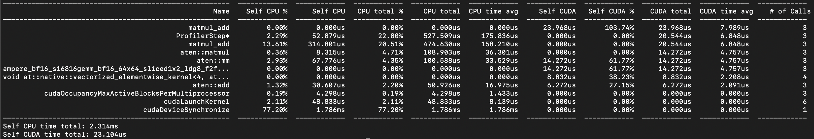
跑4096的表最后两行：Self CPU time total 4.908ms，Self CUDA time total 4.495ms，都是毫秒级。只把矩阵做大就materialize出更多GPU时间。再看图2，吃CUDA时间最多的从CPU的matmul_add变成了GPU kernel，确实从overhead-bound走到了compute-bound。接下来看 .json里的dispatch链，可以上传到Perfetto UI看trace，或用uvx trace-util生成Perfetto链接。
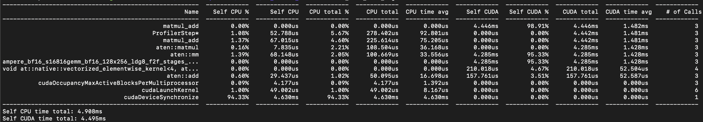
图3是矩阵乘加的profiler trace。矩形宽度是事件时长，纵向嵌套是调用层级，CPU道是CPU上的事件，GPU道是kernel真正执行，空白是等待或空闲。脚本用的是默认配置：
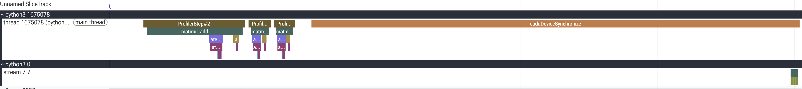
Perfetto里建议用键盘导航trace，WASD更快。
图4里有CPU和GPU两道。CPU道里有三个profile step（从ProfilerStep#2开始），来自schedule：wait跳过嘈杂的初始化（ProfilerStep#0），warmup跑但不记录（ProfilerStep#1），active才进trace。戴上侦探帽，开始提问。
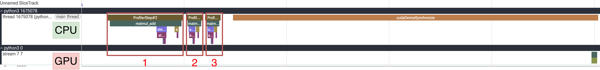
图5里ProfilerStep#2比 #3、#4宽得多，matmul_add标注也有同样pattern。真凶在标注内部，不在标注本身：#2里进record_function到aten::matmul dispatch中间隔了227.757微秒，#3、#4只有5微秒左右。图6这约228微秒的死区，原因可能是workspace分配、cuBLAS启发式、懒加载等。可以无视，也可以profile前多跑几轮warmup，这是标准做法。
| 步骤 | matmul_add开始 | aten::matmul开始 | 间隔 |
|---|---|---|---|
| #2 | 138.736 | 366.493 | 227.757 µs |
| #3 | 517.926 | 523.447 | 5.521 µs |
| #4 | 610.039 | 614.527 | 4.488 µs |
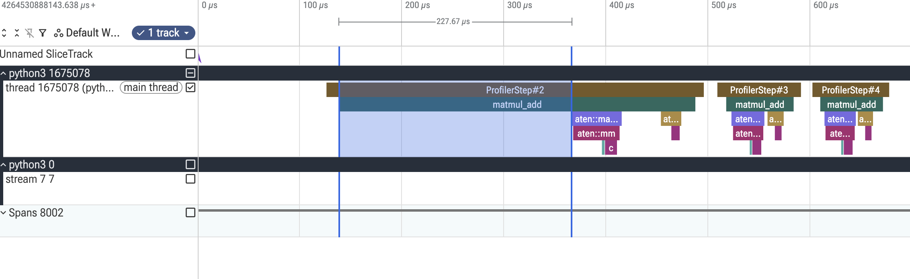
warmup就是正式profile前先跑几遍，一次性工作不计入。本例有两段warmup：进profiler前先循环跑函数，外加schedule里的warmup参数。这里开了warmup和schedule再跑一次。图7里每步时间相近了，但这不等于把一次性开销优化掉了，只是没profile它。不给个继续优化launch开销的线索就收尾对读者不公平，这里有个链接可以接着读。
跑uv run 01_matmul_add.py --warmup后的trace见图7，每步耗时相近。
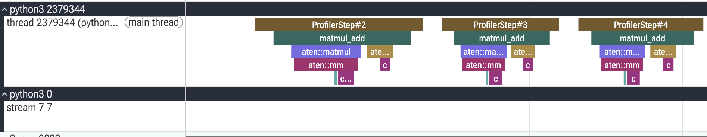
图8里CPU和GPU道差了约2.5毫秒：CPU提交CUDA kernel到真正执行之间的延迟。warmup加schedule的wait/warmup本该让GPU一直忙，这个偏移应该消失才对。把schedule改成wait=0、warmup=0看看：图9里GPU道在操作前冒出一个Activity Buffer Request。放大看图10：ProfileStep#0的matmul和add kernel紧挨着，ProfileStep#1的两个kernel之间有个窗口。最合理的解释是buffer溢出，kernel执行中又发了一次显存分配请求。
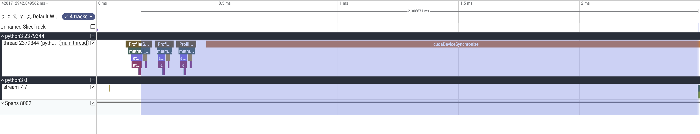
排除其他可能性的办法是多跑几轮，看窗口还出不出现。active=20跑下来如图11，窗口只在ProfileStep#1出现一次，和之前的发现一致，可以断定就是buffer请求。
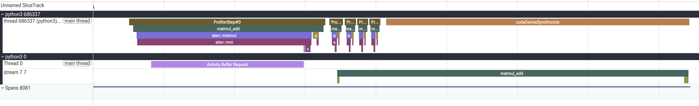
图10放大：matmul和add kernel之间因profiler buffer请求出现间隙。图11用20个active step验证，间隙只出现一次。
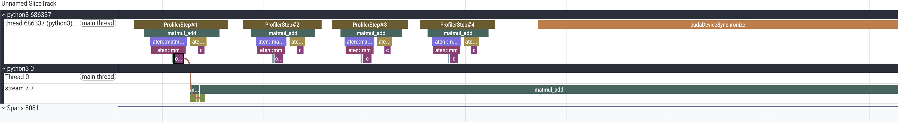
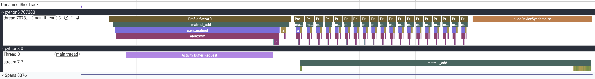
图12是嵌套的CPU调用，这是理解dispatch链长什么样的关键可视化。从ProfileStep包着step开始，因为加了标注能看到matmul_add行，里面两个aten调用，一个矩阵乘、一个矩阵加。aten::matmul是用户侧PyTorch matmul落到的ATen层分发，aten::mm是二维矩阵乘后端。给矩阵加个batch轴，PyTorch会调aten::bmm（batched），岔开看一眼：
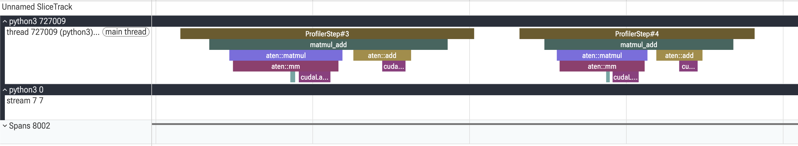
- x = torch.randn(args.size, args.size, device=device, dtype=dtype)
- w = torch.randn(args.size, args.size, device=device, dtype=dtype)
- b = torch.randn(args.size, args.size, device=device, dtype=dtype)
+ # adding a batch size of 8
+ x = torch.randn(8, args.size, args.size, device=device, dtype=dtype)
+ w = torch.randn(8, args.size, args.size, device=device, dtype=dtype)
+ b = torch.randn(8, args.size, args.size, device=device, dtype=dtype)图13里加了batch轴后，aten::matmul下面变成一串CUDA runtime调用加aten::bmm（不再是aten::mm），这也暗示cuBLAS为了dispatch出最合适的kernel要做启发式。后文除非特别说明，都用简单2D矩阵。
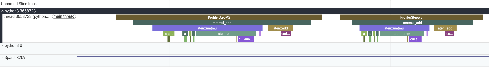
图14里aten::mm前面有两个CUDA runtime调用：cudaOccupancyMaxActiveBlocksPerMultiprocessor和cudaLaunchKernel，aten::add只有后者。前者是纯CPU侧的规划调用，问的是：给定kernel函数、block尺寸、动态共享内存，一个SM上能同时驻留多少个block。为什么matmul要规划，add不用？点开GPU kernel看资源占用就明白了。
图15里matmul的每线程寄存器数和共享内存是动态的（随矩阵尺寸变），cuBLAS带几百个kernel变体，每个启发式launch路径都要运行时查硬件容量，occupancy查询是启发式的一部分。可以把GPU matmul想象成在独立tile上干活：tile用多少、多大，取决于矩阵和硬件，现代算法复杂得多，但这个框架够用。图16里add是32寄存器、零共享内存，trivial fit，没什么可查的，设计上就是资源轻量。
速查技巧：读任何trace时扫CPU道里的cudaOccupancyMaxActiveBlocksPerMultiprocessor，每出现一次就标着一个重量级、自适应launch的kernel，多半是GEMM、卷积之类；没有它的就是逐元素那拨，PyTorch机械launch。
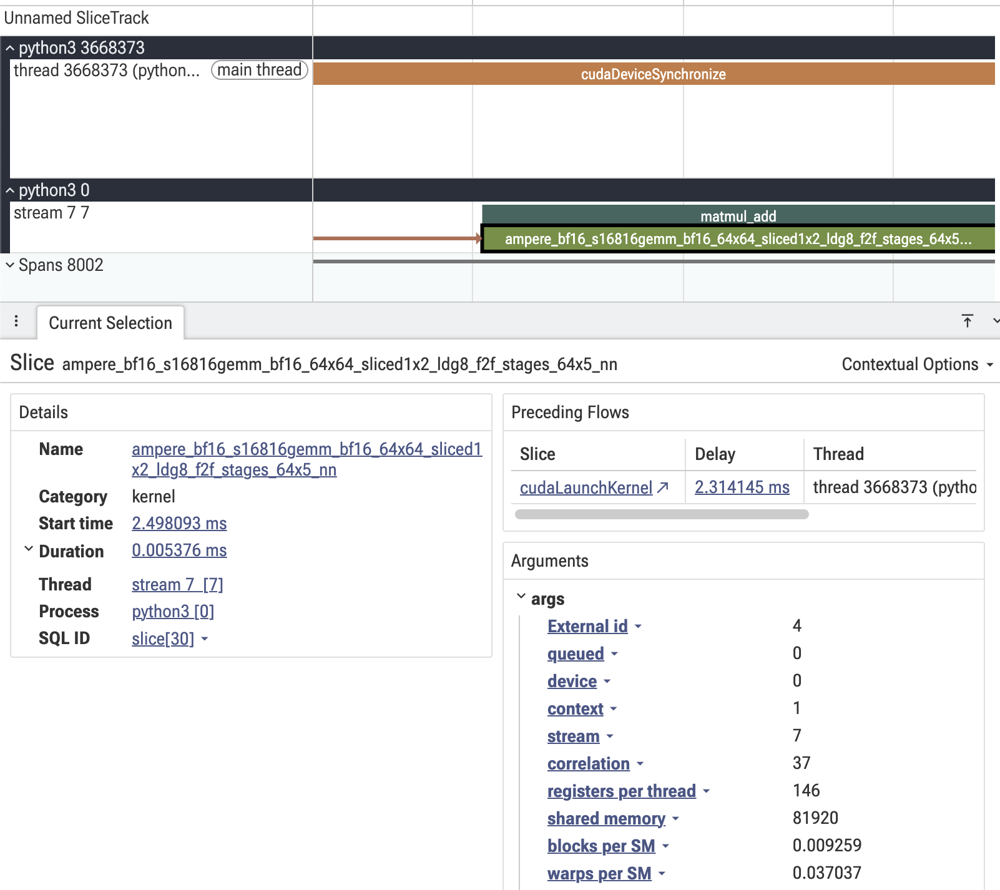
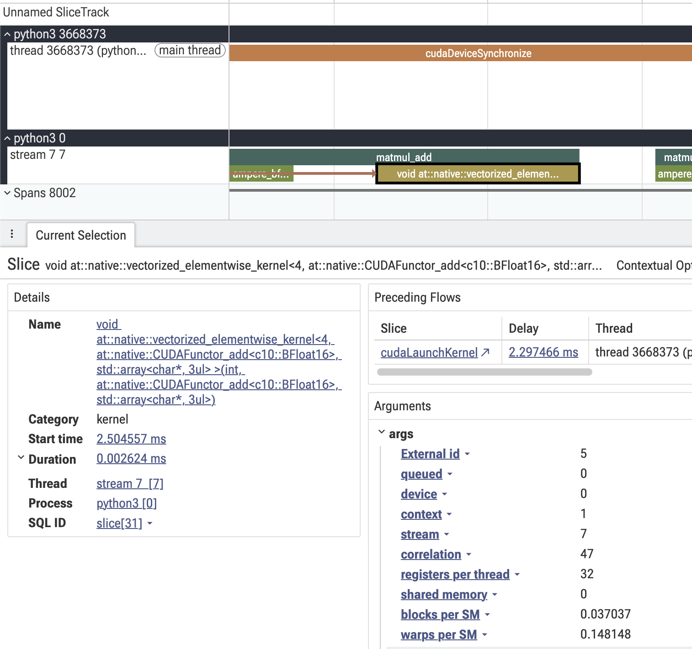
cudaDeviceSynchronize会block住CPU直到该设备上所有GPU活干完。profiler在active窗口结束时打这个同步来刷事件，没有它kernel计时就没了。1.78毫秒的同步罩着26微秒的真活，说明这轮98% 在闲，教科书式的overhead-bound症状。
前面从profiler表知道大矩阵把算法从overhead-bound推到compute-bound。跑uv run 01_matmul_add.py --size 4096 --warmup深入看trace。图17里ProfileStep#3的matmul kernel在GPU上比别的步慢，有意思的是其他kernel完全一样，说明没有cuBLAS启发式参与，没有调度间隙，CPU launch正常，也不是profiler伪影。图17点出一个理想化例子里容易漏的点：kernel运行时间不是常量，同一硬件、同一代码、同一数据也一样。
改下脚本具体化：schedule改成wait=0、warmup=0、active=20，循环跑20次。
- schedule = torch.profiler.schedule(wait=1, warmup=1, active=3, repeat=1)
+ schedule = torch.profiler.schedule(wait=0, warmup=0, active=20, repeat=1)
- for _ in range(5):
+ for _ in range(20):图18结论类似：kernel完全一样，计时不同。原因包括：
只看平均会得出matmul约1 ms的结论（5个的均值1084微秒）；看trace才会发现matmul平时约580微秒，只是偶尔GPU状态波动。两种心智模型，只有一种是对的。
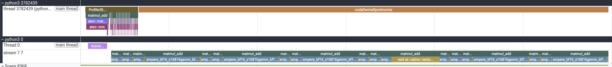
torch.compile一直令人惊叹：写正常的eager PyTorch代码，PyTorch把tensor密集的区域抓出来转成图、优化、跑生成的代码。默认后端一般是TorchInductor，整体流水线是：
这节看编译实际跑起来的样子，以及它的profiler trace。
跑uv run 01_matmul_add.py --size 4096 --warmup --compile，args.compile触发：
def fn(x, w, b):
return torch.add(torch.matmul(x, w), b)
fn = torch.compile(fn) if args.compile else fn图19里CPU多出Torch-Compiled Region: 0/0等行，指向用的编译函数。
看图20问：乘法和加法真融成一个了吗？这是图级别的算子融合：Inductor把torch.add(torch.matmul(x, w), b) 重写成单个aten::addmm(b, x, w) 调用。关键是它没有产生新的fused CUDA kernel，GPU上跑的还是同一个cuBLAS kernel，和eager一样。所以融合在dispatcher层，不在kernel层。PyTorch有torch.addmm干的就是两步并一步的事，鼓励读者自己看它的trace留言。
理论上知道编译时发生什么，看实际执行同样重要。CPU侧层级正好反映torch.compile的运行时架构。
TorchDynamo Cache Lookup是Dynamo检查当前调用是否还匹配编译时用过的输入形状、dtype、设备与tensor元数据，不匹配就重编译。这个开销每次调用都要付，编译完成之后也一样。
Torch-Compiled Region是进入编译版本的wrapper。AOTDispatcher Runtime Wrapper Prologue是AOT Autograd的运行时wrapper：这里不需要梯度，它也照样在栈里，负责tensor元数据与view追踪，requires_grad为true时还会搭起反向传播。
## Call CompiledFxGraph是真正跑生成代码的地方，后面的字符串是FX图的内容哈希。三个active step里哈希相同，确认是缓存命中。
生成的代码按这个哈希存在磁盘 /tmp/torchinductor_
看图21，本来很开心：每步只有一个cudaLaunchKernel，但和GPU trace对不上。每步还是两个kernel：Memcpy DtoD和GEMM。回CPU trace才发现漏看了cudaMemcpyAsync dispatch。addmm算out = α·A·B + β·C，cuBLAS带bias add epilogue的GEMM要往已含bias的目标buffer写，epilogue就是GEMM之后干的活，深度学习里GEMM-Epilogue层出不穷：激活、bias加、归一化，所以cuBLAS有带epilogue的GEMM变体。用不同mode会看到不同kernel变体，可以自己试试留言。
所以Inductor生成的代码做的是：
数学上结果一样。bias加并不免费：前面付一次memcpy，后面GEMM epilogue贵一点。指望的x·w + b压成单个kernel、零额外访存并没有发生，Inductor保留了两个访存操作，只是把bias copy标成memcpy、把加法标成GEMM epilogue。真正融合的实现会跳过memcpy，那是FlashAttention式手写kernel的做法，Inductor也能通过Triton codegen做到；但对4096×4096 bf16 matmul，Inductor显然判定用cuBLAS、bias走epilogue准备是最优路径。
对比eager与编译运行，最容易漏掉的是这个：
| 步骤 | eager耗时 (ms) | compile耗时 (ms) |
|---|---|---|
| #2 | 0.1 | 0.2 |
| #3 | 0.07 | 0.1 |
| #4 | 0.07 | 0.1 |
torch.compile在CPU上每步贵约2倍。因为每次调用都要走完整的Dynamo、AOTAutograd、Inductor栈，外加本来就有的aten::addmm dispatch。编译流水线是为几十个op的ML模型准备的，per-call开销能摊薄，单个op就是税。留个作业：torch.compile有mode参数，去读文档，找一个能把CPU开销降下来的mode。
把走过的pattern整理成速查表：在trace里看到这个，通常意味着那个。
| 看到的现象 | 通常意味着什么 |
|---|---|
| `Self CPU time total` ≫ `Self CUDA time total`（CPU是ms、GPU是 µs） | 开销主导。CPU花在dispatch上的时间比GPU计算还多。把活做大（更大的矩阵、batched算子）或融合调用。 |
| `Self CPU time total` ≈ `Self CUDA time total`，两者都是ms | 计算主导。GPU是瓶颈，通常这正是想要的状态。 |
| 某个事件独占 `CUDA total` | 那就是热点，从那里开始优化。 |
| 某个事件 `# of Calls` 巨大 | 即使单次便宜也可能是瓶颈。看能不能融合或batch。 |
| 某行 `CPU total` ≫ `Self CPU` | 大部分开销在子事件里。往嵌套事件里钻，不要盯着父事件。 |
| 看到的现象 | 通常意味着什么 |
|---|---|
| 第一个 `ProfileStep` 比后面宽得多 | 冷启动开销：workspace分配、cuBLAS启发式、模块懒加载。加warmup迭代，或用schedule的 `warmup` 参数。 |
| `record_function("...")` 开始与里面第一个 `aten::*` 之间有大间隙 | 同一种冷启动税，只是放大了看。标注已经进入，dispatch还没发生。 |
| `cudaLaunchKernel` 前面有 `cudaOccupancyMaxActiveBlocksPerMultiprocessor` | 重量级、自适应launch的kernel（GEMM、卷积等）。cuBLAS在问驱动一个SM能驻留多少个block，好挑kernel变体。 |
| `cudaLaunchKernel` 前面没有occupancy查询 | 逐元素或reduction kernel，footprint固定且轻量，没什么要规划的。 |
| active窗口末尾有很长的 `cudaDeviceSynchronize` | profiler在刷事件。时长主要是GPU在收尾未完成的工作，不是真的CPU开销。同步罩着很小的GPU工作，是典型的开销主导症状。 |
| 一个没写过的 `cudaMemcpyAsync` | 往往是藏着的Device-to-Device拷贝。常见于addmm在GEMM epilogue前先把bias填进目标buffer。 |
| 看到的现象 | 通常意味着什么 |
|---|---|
| GPU道上出现 `Activity Buffer Request` | profiler在分配或补充自己的事件buffer。第一个通常就是初始CPU与GPU道偏移的来源。 |
| 单个step内两个kernel之间有间隙 | 多半是执行中又来了一次buffer请求。多跑几轮确认：只出现一次，就是profiler的，不是代码的。 |
| 同一个kernel在不同step计时不同 | GPU时钟、发热、电源管理、驱动housekeeping。读trace，不要只看均值。 |
| 名字形如 `ampere_bf16_s16816gemm_...` 的kernel | matmul真正的cuBLAS GPU工作。相同形状与dtype下，eager与编译模式的kernel名通常一样。 |
| GEMM前紧挨着 `Memcpy DtoD` | addmm epilogue的bias拷贝。融合发生在dispatcher层，不在kernel里。 |
| 看到的现象 | 通常意味着什么 |
|---|---|
| `ProfileStep#N` → `<record_function name>` → `aten::*` → `aten::mm` / `aten::bmm` / `aten::add` | 标准的嵌套调用层级。Self时间不含子事件，Total时间包含。 |
| `aten::matmul` 落到 `aten::mm` | 二维乘二维矩阵乘。 |
| `aten::matmul` 落到 `aten::bmm`（带额外CUDA runtime调用） | 3D以上张量的batched matmul。cuBLAS要做更多启发式工作来挑变体。 |
| 出现 `aten::addmm(b, x, w)` 而不是分开的 `aten::add` 加 `aten::mm` | dispatcher层的算子融合。GPU kernel还是同一个GEMM，bias加折进了epilogue。 |
| 看到的现象 | 通常意味着什么 |
|---|---|
| CPU道里有 `Torch-Compiled Region: K/M` 行 | 正在编译函数内部。 |
| 每一步都有 `TorchDynamo Cache Lookup` | Dynamo在校验形状、dtype、设备与缓存的编译是否匹配。每次调用都要付，编译完成之后也一样。 |
| 没有梯度也有 `AOTDispatcher Runtime Wrapper Prologue` | AOTAutograd的运行时wrapper一直在栈里，负责tensor元数据与view追踪。 |
| `## Call CompiledFxGraph <hash>` 且各步哈希相同 | 生成代码的缓存命中。生成源码在 `/tmp/torchinductor_<user>/fxgraph/<hash>` 下。 |
| 小op上torch.compile的每步CPU时间比eager高 | 正常。Dynamo、AOTAutograd、Inductor这套栈是税，只有op足够多时才摊得薄。 |
参考：https://huggingface.co/blog/torch-profiler